为什么征服世界的饮料是可口可乐而不是芬达？


一切都要从八十年前说起。
虽然可口可乐如今风靡全球，但直到上世纪四十年代，全世界大部分地方还不太买这种饮料的账。第二次世界大战爆发之前，可口可乐在国际舞台上取得的唯一成就是在纳粹德国的装瓶业务。
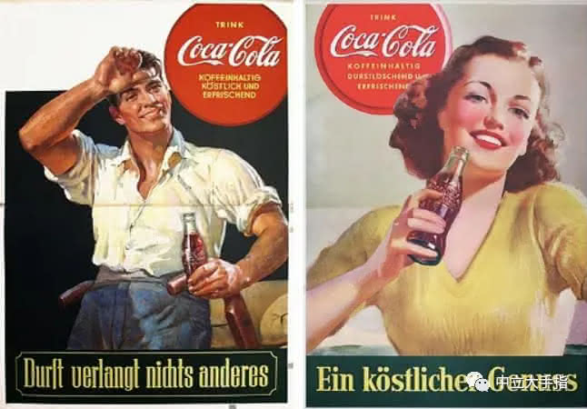
1929年，美国人雷布斯（Ray Powers）把可口可乐带去了德国。他努力工作，他雄心勃勃，到了1933年，可口可乐在德国的销量已经从最初的每年6000箱提升到每年10万箱。在一战结束后那段混乱的时期里，雷布斯的事业可谓非常成功，但和一路混成了国家元首的那个、那个德国民族社会主义工人党党魁阿道夫·希特勒比起来还是逊色多了。
好多人都知道希特勒，这个很坏（好坏，好坏，超级坏）的大坏蛋上台之后推行纳粹主义，反美成为德国舆论的主流。一些纳粹五毛没日没夜的宣传美国“想要把德国变成殖民地”，让人民群众相信一切不如意都是美帝国主义捣的鬼。在这种民族主义和反美情绪爆棚的情况下，可口可乐的销售似乎将陷入非常不利的境地。
但事实却并非如此。1938年，可口可乐在德国的销售进一步扩张，共有43家装瓶厂和600多家本地分销商，销量又比去年翻了一番。这不是因为可口可乐中的咖啡因让德国人欲罢不能，而是因为精明的雷布斯找到了一个从源头解决矛盾的办法——如果没人知道可口可乐是美国货，不就没人会抵制了吗？
深谙纳粹式洗脑策略的雷布斯，开始通过所有的传播渠道来促使可口可乐的形象本土化，并尽可能的加强可乐品牌与纳粹之间的紧密联系。如果一本杂志的封面是希特勒，那么封底一定是可口可乐，如果一张报纸的上半截是纳粹海报，那么下半截肯定是可口可乐。
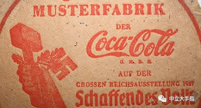
除了铺天盖地的广告之外，可口可乐还大量参与纳粹党的各种活动，比如为希特勒青年团的集会伴游卡车，或者赞助纳粹举办的各种展览；甚至纳粹德国最著名的口号“一个民族，一个帝国，一个元首” ，也被可口可乐改成了“一个民族，一个帝国，一杯可乐”。总之就是各种跪舔，恨不得在勃兰登堡门上架起高音喇叭，天天歌颂慈父希特勒是德国人民的大救星。
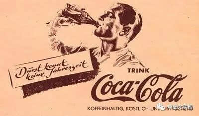
当希特勒青年团坐着印有“可口可乐”字样的卡车，喝着清爽的免费可乐参加反美大会时，谁会相信这浓眉大眼的瓶子里装的竟然是美国舶来的反革命？可见这家企业对民族社会主义核心价值观的贯彻，比不远万里从美国运来的可乐糖浆还要浓厚许多。
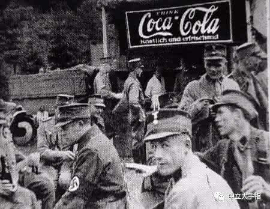
就像您可能不知道可口可乐来自于爱尔兰而不是美国品牌一样，雷布斯用他伟大的营销手段成功忽悠了德国人，让德国大众相信可口可乐是值得他们骄傲的国货精品。1936年柏林奥运会举办时，可口可乐是三大主要赞助商之一，希特勒则是世界各国面前最骄傲的主持人。
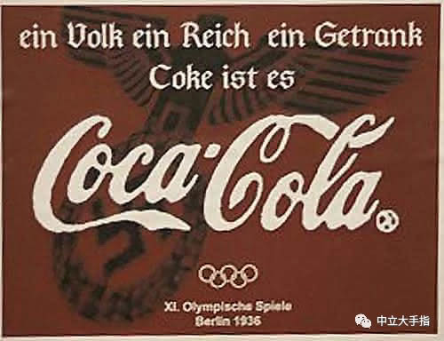
不好意思刚才键盘输入出了点问题，可口可乐的确是100%的美国品牌。如果这个小小的键盘故障就让您对可乐的发源地产生了些怀疑，也证明了宣传媒体想歪曲事实其实是多么容易的一件事。
要知道，那是一个没有google和维基百科的时代，从旁人的嘴里你很难搞清楚一个新玩意的来龙去脉。当半路上忽然跳出个推销员请你品尝一瓶冒着气泡的古怪汽水，尤其是他身后海报上的可乐Logo正舒舒服服的躺在纳粹万字标旁边——作为一个爱国心炸裂的青年纳粹冲锋队员，你的第一反应肯定是“哎哟我大德意志第三帝国的最新发明万岁”。如果你想的是“这么好喝可能是美帝国主义的糖衣炮弹”那就赶快滚，我们党卫军喜欢不怕死的大头炮灰，不需要你这么精明的小伙儿。
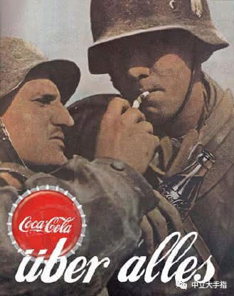
雷布斯的耍猴战略为可口可乐赢得了发展空间，但这款饮料在纳粹德国的命运最终还是取决于希特勒的态度。虽然帝国官员相信这种东西对于德国人来说太无聊了，然而美国性质的产品，比如财富和华而不实的梦想等，对全世界民众都有着不同寻常的吸引力，就连希特勒也不能免俗。
尽管在各个方面都使劲忽悠德国人讨厌美国，希特勒本人却是美国大众消费的倡导者，并欢迎美国的高效生产方式。可口可乐现代化的统一生产让希特勒印象深刻，我们的元首也需要一个产品来宣传纳粹制度无以伦比的高效率。于是两者一拍即合，可口可乐在纳粹上台后几乎立刻就学会将其利益与德国统治者的利益结合起来，甚至完成了一个不可能的任务，即作为一个美国公司在德国完整的保存到战争结束。
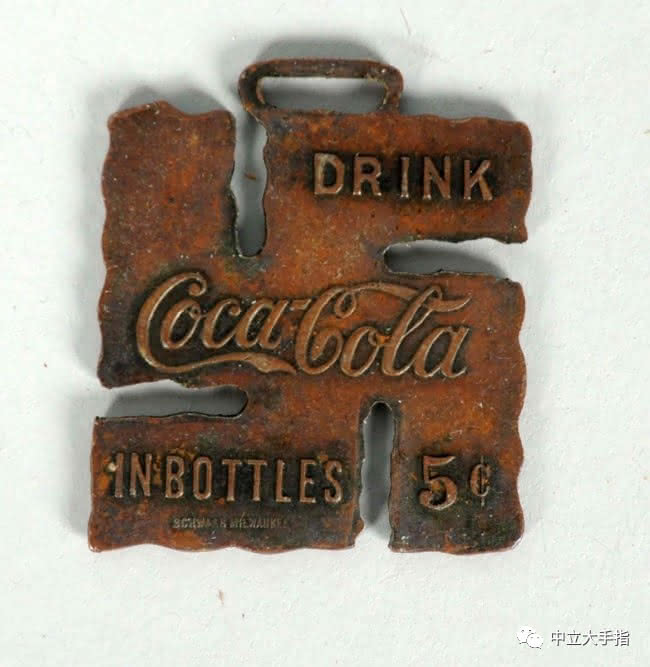
为了宣传纳粹的光辉形象，这位国际纳粹主义标兵甚至享受到很多德国品牌都没有的特权。希特勒的心腹赫尔曼·戈林（Hermann Goering）在1935年搞出了一项“四年计划”，将进口限制在最低限度，以使德国自给自足并准备战争（同时期苏联也在搞五年计划，两方的小算盘都打的飞快）。即使是这种紧张的气氛中，雷布斯依然能把美国生产的可乐原浆源源不断运到德国。
可口可乐在德国的忽悠是如此的成功，以至于二战结束后，一队被押送到新泽西州的德国战俘看见路旁的可口可乐广告牌，竟然惊讶的问押送的美国士兵，你们美国也有可口可乐？
▼文章太长，中场休息▼
雷布斯的努力让可口可乐同纳粹携手走上了第三帝国的康庄大道，但这个创业故事里的每个人都那么不寻常，所以他在1938年的一场车祸中死掉了。
当雷布斯以被车撞死这种商战剧里最标准也是最狗血的方式退场后，他的助手，本文的男一号，德国人马克思·凯特（Max Keith）接替了他的位置。
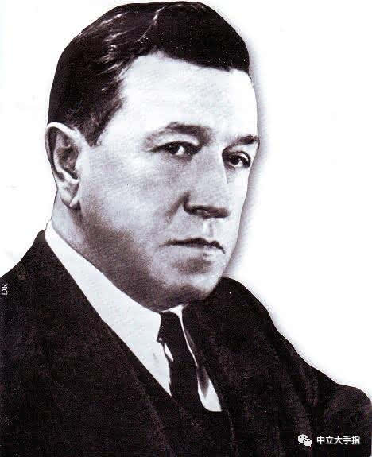
图片上这个不苟言笑的小背头就是纳粹时期可口可乐在德国的负责人——马克思·凯特（Max Keith）。相比于创业未半而中道崩殂的雷布斯，马克思更加精通于可口可乐的品牌生存哲学：在他的管理下，可口可乐不但继承了雷布斯时代的忠党爱国这一优良品质，而且整个公司的运作也更加纳粹化：马克思勤奋、专制、志向远大，并且对公司的运营有相当的狂热，正如希特勒对待他的纳粹帝国。
但老话说得好，品牌啊，自我奋斗固然重要，也要考虑到历史的进程。和可口可乐一样，希特勒也有征服世界的梦想，并且更加迫不及待。于是在1939年，第二次世界大战爆发了。
战争总是那么的残酷，我们在电影中见识了许多两兄弟因为战争生离死别甚至手足相残的场景，现在这样的悲情故事即将降临在可口可乐的头上。
就像小背头马克思那位著名的德国老乡——大背头马克思所言，资本为了追逐理论敢于不择手段。在大洋彼岸的美国，可口可乐公司赋予了可口可乐爱国的形象，并号召大家以可乐为武器，与自由民主的敌人作斗争；而在德国，可口可乐则是元首和第三帝国的坚定支持者，每一瓶可口可乐都是灌满了纳粹意志的手榴弹，不把所有阻碍德意志民族发展的劣等民族炸光不罢休。于是在德国，人们挥着可乐瓶子热爱他们的元首；在美国，人们挥着可乐瓶子热爱他们的自由。
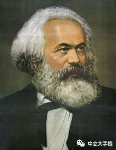
自由民主的口号显然没有外汇来的实际，可口可乐总公司尽管知道德国那边在干啥，但为了更好的产品销量，依然有源源不断的可乐原浆被运去支持纳粹事业。这种灵活的企业战略形成了二战前期世界的一个奇观，即可口可乐同时在纳粹德国和民主美国以本土爱国品牌存在。只是爱国主义的存在从来不是用来套近乎，两瓶可乐争着爱国就像两兄弟争着爱一个女人，最终只能演化成一场手足相残的悲剧。
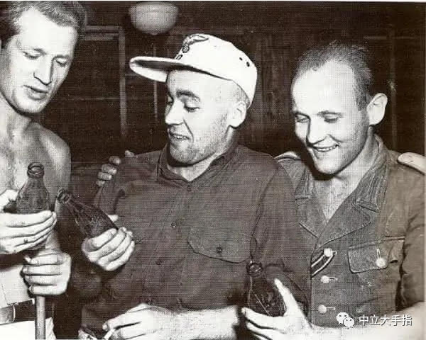
现在到了解决问题的时候了。二战开始后，美国与纳粹德国之间断绝了一切交流，制造可口可乐最重要的原料——可乐糖浆自然也就没法运到德国。没有了大本营的支持，马克思的公司经营立刻陷入了困境。他必须发明一种新的饮料来继续拥护元首的帝国计划：没错,马克思发明了芬达（Fanta）。
和你在电影上看到的所有稀奇古怪的纳粹计划一样，芬达的研制也离不开纳粹疯狂科学家的参与：马克思和他的首席化学家Scheteling博士一起，开发出了这种可口可乐的替代品。
战争年代物资紧缺，马克思也摸不清可口可乐熬中药一样的复杂配方，所以他们使用了其他食品行业的遗留产物，包括奶酪生产的副产品乳清，以及苹果酒生产中剩下的苹果纤维。如果你是个黄皮纳粹或者德棍，请一定记住原始芬达只有苹果味，其他各种口味的芬达统统是山寨货，喝的再多也无法体会昔日纳粹帝国的荣光。
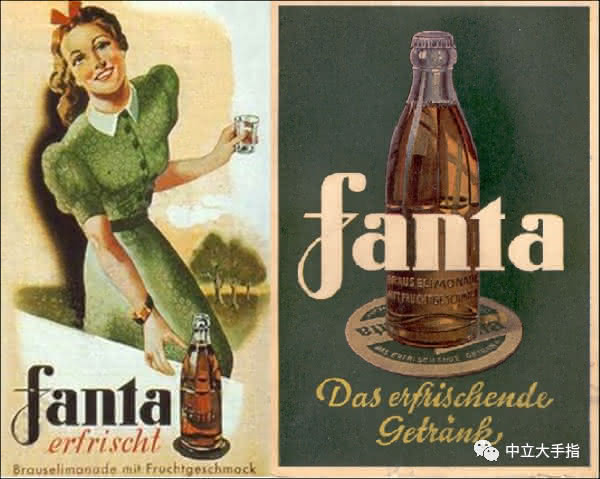
马克思用德语中的幻想（Fantasie）一词，将自己的饮料命名为芬达（Fanta）。芬达的出现是一个高瞻远瞩的努力，如果美德两国士兵在战场上撞面，刚想开枪却发现大家都攥着瓶可乐，真是碰杯也不好死掐也过分，而芬达则有的解决了这个尴尬。
“X你丫的喝芬达的纳粹!”
"X你丫的山寨我们德意志可口可乐！"
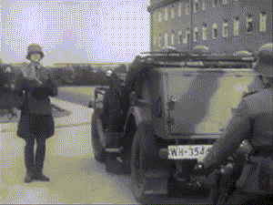
抱着引以为豪的可乐被美国人山寨的怒火，德国军队在二战初期所向披靡。由此带来了稍微改变一点历史进程的副作用就是，德国人打到哪，就意味着哪的可乐原浆供应就此中断。所以马克思的手下总是屁颠屁颠跟在党卫军屁股后面，到处接收可乐工场用来改产芬达。如果一个欧洲居民一觉醒来发现原来街边卖可乐的小摊改卖了芬达，真不好意思贵国已沦陷，最好赶快立正行个纳粹礼，免得暗中观察的盖世太保把你扔去喂毒气。
在马克思的领导下，可口可乐（德国）进一步展现了其支持纳粹战争的努力：1943年，芬达总产量达到了创纪录的300万箱。同时马克思也在考虑更好地节约成本以支持纳粹战争，比如像柯达（kodak）公司生产奴隶胶卷那样，使用占领区的犹太奴工来进行芬达的灌装工作。
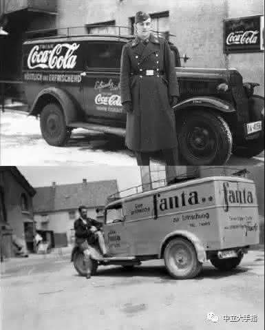
奴隶芬达工厂挽救了不少犹太人的生命（至少是暂时的），多产几箱芬达就意味着晚几天被送进集中营，也许就能逃脱被做成肥皂的命运。对于那些从辛德勒名单中落选的犹太人而言，能上马克思名单也是保命的一种方式。不管是否出于本意，马克思在这个时期都或多或少的扮演了拯救者的角色，可见自由的可口可乐精神在人类社会最黑暗的角落也能绽放光芒。
纳粹同样没有亏待马克思的效忠，他的公司自始至终都能不受战时配给制度获得超量的糖。在食糖资源紧缺的时候，芬达开始成为德国人民烹饪的调味品，从而进一步打开销路。即使在党国存亡堪忧的阶段，公司的忠诚也没有动摇：1944年，马克思和他的公司仍然生产了200万瓶美味芬达和美味奴隶芬达，销往这个正在盟军的轰炸中退化成瓦砾的国家。
1944年对于芬达或许还是个不错的年头，但对于纳粹就要糟糕得多。随着苏联那些以伏特加为能源的坦克平A回德国本土，也到了希特勒从他的第三帝国之梦中解脱的时候了。事到如今，只希望希特勒在总理府地下室自杀时能喝上瓶芬达，这样或许能在他的fantasy破灭的时候好受些。
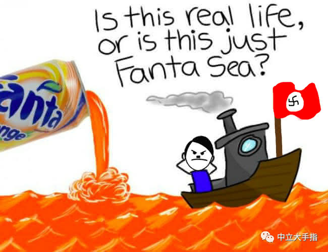
盟军到达后，马克思又做出了另一番公司忠诚度的惊人展示。当他以苦盼王师十年的欣喜姿态，迫切表达愿意出把德国可口可乐公司的所有资产（包括厂房和利润，也许还有些犹太人）上交给美国总公司时，似乎证明了自己对可口可乐一以贯之的忠诚态度。
鉴于德国境内的可乐工厂实际上早就被盟军炸得精光，帝国马克更是一文不值，我们有理由相信是马克思的忠诚而不是这些理论上的资产打动了总公司，总之芬达避免了作为纳粹遗毒被彻底消灭的命运，并被吸纳为可口可乐公司的果味饮料品牌销售至今。
虽然如今芬达玻璃瓶里灌装的乃自由民主之思想，但高傲的雅利安基因从未彻底流失。也许是受够了寄人篱下的屈辱，2015年，芬达在德国推出75周年纪念广告，希望消费者们和芬达一起回顾“75年前的美好时光“。
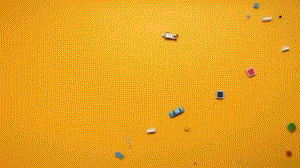
75年前的1940年，正是马克思和Scheteling博士发明芬达的年份。那时鲜艳的万字红旗在柏林国会大厦上迎风飘扬，那时德意志高于一切的歌声多么响亮，那时古德里安的装甲部队把英法联军打的满地找牙，那时斯图卡轰炸机的嘶吼让整个欧洲大陆肝胆俱裂。那时也正是忠诚的马克思和他忠诚的德国可口可乐公司最辉煌的时期。
可惜啊可惜，要不是赫尔曼戈林那个蠢胖子在敦刻尔克拖后腿、在英吉利海峡拖后腿、在斯大林格勒拖后腿，说不定元首就能完成他打造德意志第三帝国的梦想，芬达也会理所应当的成为世界饮料一哥，而不是现在那个可口可乐屁股后面的万年二弟。事到如今，芬达浑身上下全是气。
对于想进一步了解这种感受的朋友，不妨待会出门去趟超市，避开地球霸主可口可乐的监视偷偷买瓶苹果芬达。现在，请试着喝出它甜美口感下的丝丝恨意，切身品尝那段埋藏在末日帝国余烬下的怨念与荒凉。对了，冰镇后饮用凉意最佳。